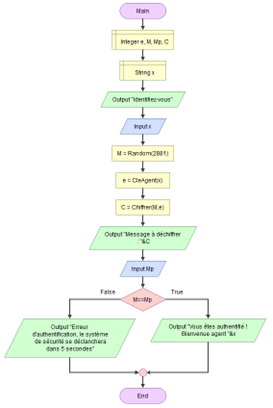
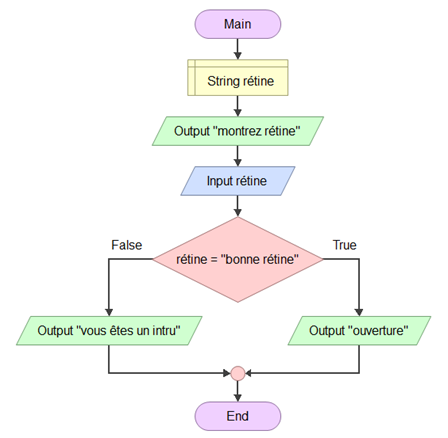
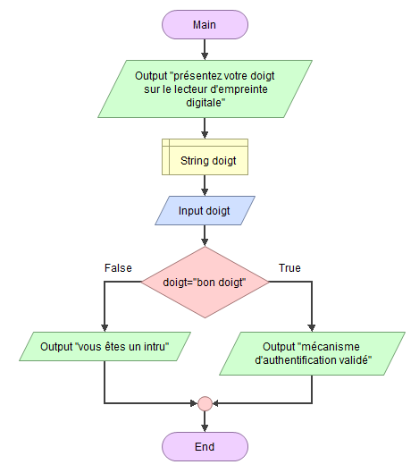
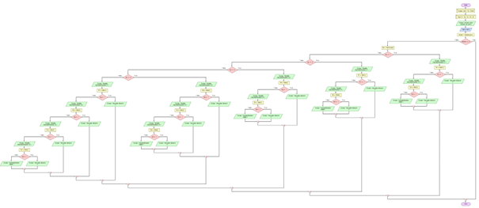

Coffre-fort
Arduino & C++ - 2021
Le context de ce projet était qu'une agence d'espionnage voulait améliorer le système de sécurité de leur coffre-fort. Pour ce projet, nous avions à disposions une carte Arduino Uno, des résistances diverses, des LEDs, des transistors, des interrupteurs, des breadboards et un générateur 20V.
Le système de sécurité devait identifier le modèle d'une carte électronique de chaque agent, déterminer le niveau de sécurité en fonction de celui-ci, l'appel des différents mécanismes d'authentification, et l'ouverture du coffre.
Etant donné la restriction de temps que nous avions, nous n'avons réaliser que 5 mécanismes d'authentification sur la totalité des agents possible.
LES CIRCUITS LOGIQUES
Ce schéma sert de context. Il existe quatre entrées qui sont les interrupteurs I1, I2, I3 et I4. Il existe également huit modèles pour les différentes cartes. Voici donc la table de vérité qui en ressort :

Voici quelques petites explications, sur l'image ci-contre, on y voit une porte logique "ET" qui a cinq entrées qui correspondent aux interrupteurs (le cercle rouge) et une entrée qui correspond à si la carte est activée ou pas (le cercle vert).
Chaque carte correspond à un enchaînement d'interrupteurs unique afin d'avoir plus de sécurité.
Circuit logique interne du coffre
Dans le circuit interne du coffre, selon la combinaison d'interrupteurs, c'est-à-dire, selon la carte sélectionnée, le circuit logique indique à quel modèle elle correspond.
Circuit logique du comparateur de sorties
Le schéma suivant est un circuit logique permettant de comparer les sorties. Comme sur le circuit précédent, on commence par faire la combinaison d'interrupteurs, ensuite le système ba détecter à quelle carte correspond la combinaison. La porte "ET" afin de vérifier si la carte est insérée. En parallèle, on fait correspondre les combinaisons avec leur modèle et enfin on utilise des comparateurs qui comparent une carte avec un modèle (le cercle rouge).
LES CIRCUITS ELECTRONIQUES
La carte Arduino a pour rôle d'identifier un modèle en fonction de la tension d'entrée qu'il va recevoir. En fonction de celle-ci, la carte Arduino va permettre à l'agent de rentrer son code sur le digicode. Nous avions remarqué que plus la résistance équivalente était élevée, plus la tension de sortie diminuait.
Schéma logique simplifié de la carte
Pour le schéma logique simplifié de la carte, nous avons eu comme carte à implémenter celle avec les interrupteurs I1 et I4 avec les résistances R1 et R3. Le nombre d'entrée sera donc de quatre interrupteurs et de deux sorties, les résistances. Les interrupteurs I2 et I3 ont une porte "NON" pour que les interrupteurs soient égaux à 0 tout en activant la porte "ET" si les deux autres interrupteurs sont actifs.
Circuit électronique de la carte
Afin de pouvoir créer le circuit électronique de la carte, il a fallu que nous cherchions comment
traduire des portes logiques en circuit électronique.
La porte "NON" se traduit par un transistors et de deux résistances. Si le transistor reçoit du
courant à sa base, le transistorlaisse passer le courant du générateur directement vers la mise à
terre et donc ne passe pas vers les autres transistors de la porte "ET".
La porte "ET" se traduit par la combinaison en série d'autant de transistors qu'il y a d'entrée dans
la porte "ET". Ainsi, si l'un des transistors ne reçoit pas de courant à sa base, le courant ne
passe pas vers les prochains.
Légende :
- L'encadré rouge représente la traduction de plusieurs portes logiques non.
- L'encadré bordeaux représente des transistor qui quelque soit le passage de courant ne renvoie de
courant à sa résistance associé.
- L'encadré jaune désigne les entrées délivrant ou non un courant électrique.
- L'encadré orange désigne les sorties délivrant ou non un courant électrique.
- L'encadré vert désigne les deux transistors faisant passer le courant à condition que les
interrupteurs I1 et I4 soit en position fermés.
- Les encadrés violet désignent respectivement la borne positive d'un générateur et la borne
négative.
Circuit électronique du coffre
Afin de produire le circuit électrique complet du coffre, il nous a fallu reproduire le circuit du coffre qui nous était fourni sur le logiciel LTspice. Par la suite, nous avons intégrer le circuit de la carte ce qui nous donne ceci :

Légende :
- L'encadré vert désigne la borne positive et négative d'un générateur.
- L'encadré jaune désigne les interrupteurs.
- L'encadré rouge représente le circuit électrique de la carte.
- L'encadré jaune foncé représente les différentes DEL (diode électroluminescente).
- L'encadré noir représente les différentes résistances.
- L'encadré orange représente la DEL permettant d'affirmer ou non la présence de courant électrique dans
la carte Arduino.
- L'encadré bleu désigne la résistance R5 permettant d'influer sur la tension en entrée de la carte
Arduino.
- L'encadré violet désigne la carte Arduino.
LES LOGIGRAMMES
Nous avons réalisé divers algorithmes sous forme de logigrammes de chaque mécanismes d'authentification sous forme de questions, ensuite l'algorithme principal du système d'authentification du coffre décrivant le processus complet (depuis l'identification du modèle de carte, la détermination du niveau de sécurité, l'appel aux différents mécanismes d'authentification et enfin l'ouverture du coffre).
Logigrammes des mécanismes d'authentification questions
Premier mécanisme d'authentification
Le premier algorithme du mécanisme d'authentification est une première question avec quatre propositions de réponses. L'agent aura donc juste à choisir parmi la réponse 1, 2, 3 ou 4. La première question est donc "Quelle est la capitale de la France ?", les différents choix étaient "Paris", "Marseille", "Lille" ou "Moscou".
Pour cette algorithme, on commence par déclarer nos deux premières variables qui sont la variable "response1" et la variable "response". Le programme enverra cinq message dont la question et les quatre réponses possibles. L'agent indique ensuite la réponse qui lui paraît être la bonne. Par la suite, quatre fonctions "si" vérifirons la réponse entrée. Dans ce cas, la bonne réponse est la réponse 3, "response = 3", le programme attribuera "response1 = 1" mais si la réponse n'est pas correcte, alors nous aurons "response1 = 0" et donc le programme affichera une erreur.
Second mécanisme d'authentification
Le second algorithme du mécanisme d'authentification est une deuxième question avec quatre propositions de réponses également. L'agent aura donc juste à choisir parmi la réponse 1, 2, 3 ou 4. La première question est donc "Quel est le résultat de 5! ?", les différents choix étaient "120", "12", "1.2" ou "Moscou".
L'explication est la même que pour la fonction de la première question sauf qu'au début on déclare "response2". La question et les réponses sont différentes mais le principe reste le même. Dans cette fonction, la bonne réponse est la réponse "120" donc l'agent doit indiquer la réponse 1 afin que "response2" soit égale à 1.
Troisième mécanisme d'authentification
Le troisème algorithme du mécanisme d'authentification est encore une question avec quatre propositions de réponses. L'agent aura donc juste à choisir parmi la réponse 1, 2, 3 ou 4. La première question est donc "Êtes-vous un vrai Agent ?", les différents choix étaient "Oui", "Non", "Peut-être" ou "Moscou".
L'explication est la même que pour la fonction de la première question sauf qu'au début on déclare "response3". La question et les réponses sont différentes mais le principe reste le même. Dans cette fonction, la bonne réponse est la réponse "Oui" donc l'agent doit indiquer la réponse 2 afin que "response2" soit égale à 1.
Dernier mécanisme d'authentification
Le dernier algorithme du mécanisme d'authentification est une quatrième question avec quatre propositions de réponses. L'agent aura donc juste à choisir parmi la réponse 1, 2, 3 ou 4. La première question est donc "Quelle est la couleur du cheval blanc de Napoléon ?", les différents choix étaient "Noir", "Blanc", "Moscou" ou "Gris".
L'explication est la même que pour la fonction de la première question sauf qu'au début on déclare "response4". La question et les réponses sont différentes mais le principe reste le même. Dans cette fonction, la bonne réponse est la réponse "Oui" donc l'agent doit indiquer la réponse 4 afin que "response2" soit égale à 1.
Mécanisme d'authentification par identification
Ce mécanisme d'authentification par identification demande à l'agent d'indiquer des informations d'identification afin de vérifier s'il s'agit réellement d'un agent ou d'un intru.

Premièrement, on déclare des variables d'entrées, les entiers e, M, Mp et C ainsi qu'un strin x. Le
programme affiche le message "identifiez-vous" puis attend que l'agent rentre la valeur x,
c'est-à-dire son nom. Ensuite le programme appelle les fonctions Random(), CleAgent() et Chiffrer()
et assigne les valeurs retournés par ces fonctions aux variables M, e et C dans cet ordre.
Puis le programme renvoie le message "Message à chiffrer :" ainsi que la variable "C", étant le
nombre "M" chiffré par la clé publique "e" et attend que l'agent rentre le message déchiffré.
Enfin une condition "si" vérifie si le nombre "Mp" entré par l'agent sont bien les mêmes. Dans
chacun des cas le programme affiche un message validant l'authentification ou non.
Logigramme, fonction Chiffrer()
La fonction Chiffrer() si contre est une des fonctions appelé dans le programme principal ayant pour
rôle de retourner un message chiffré à partir du message originel et d'une clé publique permettant
le chiffrement.
Tout d'abord, la fonction déclare deux variables d'entiers nommé "n" et "C". Ensuite on assigne la
valeur de 2881 (43*67) à la variable "n". Puis on assigne à la variable "C", la valeur retournée par
la fonction "Modexp()" avec "M", "e" et "n" comme paramètres. Et enfin, la fonction reetourne la
variable "C".
Logigramme, fonction CleAgent()
La fonction CleAgent() a pour paramètre une variable de type chaîne de caractère nommé "x".
La fonction déclare un tableau de taille 16 et de type chaîne de caractère nommé "NameAgent".
Après chacunes des cases du tableaux lui est assigné une lettre allant de "A" à "Q" excepté "G".
La fonction déclare un tableau de taille 16 et de type entier commé "ClePublic". Ensuite chacune des
cases du tableau lui est assigné une valeur d'enter allant de 601 à 811.
Enfin la fonction déclare deux variables d'entiers nommé "e" et "i". Puis une boucle "for" est créée
avec "i" comme compteur allant de la valeur 0 à la valeur 15. Cette boucle contient une condition
pour que la valeur du tableau "NameAgent" avec l'indice "i" équivaut à la variable "x" alors on
assigne la "i"ème valeur du tableau "ClePublic" à la variable "e". Pour terminer, le programme
retourne la variable "e".
Logigramme, fonction Modexp()
La fonction Modexp() a pour paramètre 3 variables de type entier et retourne une variable de type
entier nommé "r".
Premièrement, la fonction déclare la variable "r" puis vérifie que la clé publique entré en
paramètre est bien un entier positif. Si ce n'est pas le cas, la fonction affiche le message
"unhandled case" et termine le programme.

Ensuite le programme vérifie que la variable "a" n'équivaut pas au 0 ou que la variable "n"
n'équivaut pas à 1. Dans le cas contraire la fonction assigne à la variable "r" la valeur 0 et
retourne la variable "r".
Dans les cas où est "a" est différent de 0 et "n" différent de 1 à la variable "r" et on entre dans
une boucle "while". La boucle a pour condition tant que "e" est supérieur à 0. Tant que cette
condition est remplie, on assigne l'opération suivante à "r" et on retire 1 à la variable "e": (r *
(a mod n)) mod n. Enfin la fonction retourne la variable "r".
Mécanisme d'authentification par identification rétinienne
Comme son nom l'indique, ce mécanisme d'authentification permet d'identifier l'agent à partir de sa rétine. Nous n'avions pas réellement de lecteur de rétine alors nous avons fait au plus simple, nous avons une variable "rétine" ensuite nous avons l'affichage d'un message disant "Montrez votre rétine" puis elle est enregistrée en entrée et nous avons une fonction si, en cas d'erreur ou de mauvaise rétine, le programme affiche une erreur.
Mécanisme d'authentification par identification digitale
Comme son nom l'indique, ce mécanisme d'authentification permet d'identifier l'agent à partir de l'empreinte de son doigt. Le principe de fonctionnement est exactement le même que le précédent mis à part qu'on demande à l'agent de présenter l'un de ses doigts et non pas un oeil.
Algorithme de la fonction principale
La fonction principale reprend toutes les fonctions vu précédemment en y ajoutant de nouvelles moins importantes. Cet algorithme reprend donc le fonctionne du coffre-fort, ce sera le cheminement que les agents devront suivre afin de pouvoir accéder au contenu de celui-ci.

Afin de rentrer plus dans les détails, je vais vous expliquer comment a été construit ce logigramme.
Premièrement nous déclarons les variables "cartes", "Ns" et "Model" qui sont des entiers ainsi que
"R1", "R2", "R3", "R4" et "R5" qui eux sont des réels. Le programme demande donc à l'agent d'entrer
son numéro de carte qui sera déclaré comme entrée "carte".
On appelle la fonction Model() qui permettra de savoir après quel niveau de sécurité l'agent va
devoir effectuer. Ensuite, on utilise la fonction "si" de telle sorte que si le modèle est égal à 9,
alors le programme s'arrête, si le modèle est 1 ou 2, alors ce sera le niveau de sécurité 1 qui sera
mis en place.
On appelle la fonction "Ns" sur le model ce qui donne "Ns = NS(model)". En fonction du modèle de la
carte apparaît donc un message nous disant le numéro d'authentification. Maintenant entre en jeu les
différents mécanisme d'authentification vu précédement.
Si l'agent réussi à passer les différents mécanismes d'authentification qui lui était démandé, son
authentification est validé et donc le coffre s'ouvrira. Dans le cas contraire, une erreur
s'affichera et l'agent devra retirer sa carte avant de pouvoir recommencer.